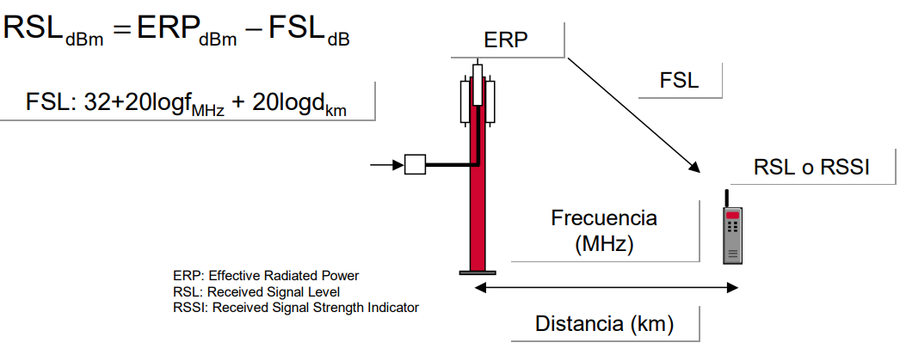
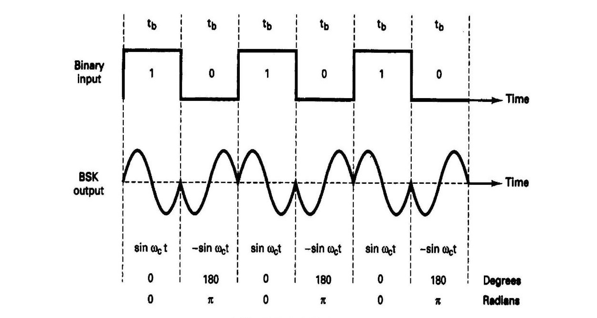

La interfaz aérea o interfaz aire es el enlace de comunicación por radio entre la estación móvil y la estación base activa
Elementos de Importancia
ESTACION MOVIL (MS)
Proporciona una interfaz de comunicaciones entre los usuarios y la red vía radio. Funcionan a través de una SIM (Subscriber Identity Module)
FUNCIONES
Transmisión/recepción de las informaciones de usuario y de señalización a través de esa interfaz radio
Sintonización de frecuencias y seguimiento automático de las estaciones base
Realiza la adaptación de interfaces y velocidades para las señales de datos.
La MS comprende tres unidades diferentes
ESTACION BASE (BST)
Constituida por los equipos transmisores/receptores de radio (transceptores), los elementos de conexión al sistema radiante, las antenas y las instalaciones accesorias (torre soporte, pararrayos, tomas de tierra, etc.)
FUNCIONES
Realiza medidas de la señal radio proveniente del móvil.
Establece el enlace radio con el usuario móvil (modulación, demodulación, igualación, codificación, etc.)
Gestión del Time Advance (Sincronización)
Operación y mantenimiento
Video Informativo
CONTROLADOR DE ESTACION BASE (BSC)
En un sistema de telefonía móvil, es la estación que se encarga de controlar un grupo de estaciones base transceptoras (BTS), en relación con su potencia y las transferencias de llamadas en curso de una canal a otro, normalmente como resultado del movimiento de una estación móvil de una célula a otra.
Gestiona y controla las BTS (hasta varias decenas)
FUNCIONES
Es el responsable de la asignación y liberación de los radiocanales (recursos radio) con el móvil y de canales terrestres con la red.
Fija el contenido de los canales de Radiodifusión y asigna los mensajes de paging a los subcanales físicos o “paging group”
Gestión de los procesos de transferencia (handover) entre BTS´s bajo su control.
Ejecuta los algoritmos del control de potencia y cifrado.
Físicamente, puede encontrarse en el mismo emplazamiento que una BTS, junto a una MSC o sola.
SUBSISTEMA DE ESTACION BASE (BSS)
Adapta la señal de voz específica del interfaz radio GSM (13Kbps) al formato utilizado en la red fija (64Kbps).
Puede estar localizado en la BTS, BSC o MSC.
RED DE TRANSPORTE LOCAL (Backhaul)
Los BTS y BSC, tienen interfaces de tipo E1 soportando TDM en el primer caso y ATM en el segundo caso.
CENTRO DE CONMUTACION MOVIL (MSC)
Conmutación de llamadas y las bases de datos propias del sistema que permiten el establecimiento de estas.
FUNCIONES
La Provisión del Servicio Básico
Gestión de llamadas.
Autentificación de la identidad del usuario.
Llamadas de emergencia.
Servicios suplementarios.
Servicios de grupo de voz. (GSM 2+).
Servicio de mensajes cortos, SMS (Short Message Service).
Confidencialidad de los elementos de información de señalización.
Soportar la Operación entre Celdas
Registro de posición. Son los procedimientos mediante los cuales las bases de datos de la red (VLR y HLR) guardan de forma actualizada la posición en la que se encuentran los móviles. Así, por ejemplo, la red sabrá hacia dónde dirigir una llamada a un móvil.
Traspaso (Handoff).
Restablecimiento de la llamada.
Gestión de la Propia Red
Funciones relacionadas con la operación y mantenimiento de la red
ARQUITECTURA DE UN CENTRO DE CONMUTACIÓN MÓVIL
VLR (Visitor Location Register)
Base de datos en la que se guarda información temporal de cada cliente que se encuentra en el área de influencia de los MSC. Se guardan datos de identificación del usuario como el (IMSI o el TMSI)
HLR (Home Location Register)
Base de datos distribuida (única por red GSM) que contiene información estática relativa al servicio de todos los clientes de la red GSM y también información dinámica
GMSC (Gateway Mobile Switching Center)
Es un nodo que permite interrogar al HLR para obtener información de encaminamiento para una llamada dirigida a un móvil. Por lo tanto, es el punto de unión de la red GSM con otras redes externas.
IWF (InterWorking Function)
Entidad funcional asociada al MSC. Proporciona los medios necesarios para el interfuncionamiento de la red GSM con las redes externas fijas (PSTN, ISDN y redes de paquetes PDN).
AuC (Authentication Center)
Gestiona los datos de seguridad y autentificación de los usuarios. Proporciona al HLR la tripleta de autentificación (RAND,SRES y Kc) que permite la autentificación del móvil en cada MSC/VLR. Guarda la clave de identificación individual de cada usuario, Ki.
EIR (Equipment Identity Register)
Registro de identificación de equipos. Su función consiste en evitar que se utilicen equipos móviles no autorizados en la red. Para la comprobación se utiliza el IMEI o identificación internacional del equipo móvil.
PROCEDIMIENTO DE LOCACLIZACIÓN
MANEJO DE MOVILIDAD
PROCEDIMIENTOS
HAND-OFF/HANDOVER
Cuando una estación móvil se desplaza a una nueva celda mientras la llamada está en progreso, el centro de conmutación y/o el centro de control de estaciones base transfiere automáticamente la llamada a un nuevo canal o código de comunicación perteneciente a la nueva estación radio base.
Video Informativo
ROAMING
En telefonía celular consiste en alojar a un abonado que pertenece a otro sistema y ofrecerle el servicio como visitante.
Video Informativo
PROCESO
ENLACES COMERCIALES PARA ROAMING MÓVIL INTERNACIONAL
PRINCIPALES RUTAS DE ROAMING ÍNTER-REGIONALES E INTRA-REGIONALES EN AMÉRICA LATINA
PÉRDIDAS EN EL ESPACIO LIBRE (FSL)
EN UN RADIO ENLACE
EN UN ENLACE DE BS-MS (Considerando los efectos por reflexión)
β considera efectos por:
Rugosidad del terreno
Obstáculos en la línea de vista
Edificios y árboles
Áreas montañosas
NIVEL DE LA SEÑAL EN EL RECEPTOR (RSL)
Es el nivel de potencia que recibe un receptor. El nivel de señal (RSL) se expresa en una unidad de potencia logarítmica (dBm), que generalmente son valores negativos

MODELOS DE PREDICCIÓN DE PROPAGACIÓN
Su función es la predicción de la perdida de señales para cualquier distancia de separación entre el transmisor y el receptor
Variables en general en las que se basan estos modelos:
Datos de elevación de terreno
Factores de corrección debido a edificios, bosque, lagos, etc
Altura de la antena, patrón de radiación de la antena, ERP
Patrón de distribución de tráfico
Planeación de frecuencias
MODELO HATA
Es uno de los modelos más utilizados en la planificación y dimensionamiento del segmento de propagación de sistemas inalámbricos de telecomunicaciones, incluyendo los sistemas TDA.
Usado en Ambientes urbanos y suburbanos.
MÉTODOS DE CALCULO
MODELO WALFISCH-IKEGAMI
En él se incorpora la influencia de edificaciones y calles en las que se encuentra el dispositivo receptor, para una predicción más precisa de las pérdidas de propagación en entornos urbanos. De acuerdo con [16], las pérdidas pueden evaluarse dependiendo de la existencia o no de línea de vista entre el transmisor y el receptor.
Usado en Ambientes urbanos densos.
Video Informativo
FORMULAS
Variables en general en las que se basan estos modelos:
Sistemas con línea de vista (LOS)
Sistemas sin línea de vista (NLOS)
PROBLEMAS EN LA PROPAGACIÓN DE SISTEMAS MÓVILES
DESVANECIMIENTO POR MULTITRAYECTORIA
Se da por la existencia de múltiples trayectos de propagación a demás del directo. Se produce por refracción en las capas de la atmosfera. Produce atenuación y distorsión.
Problemas generados por la propagación Multitrayectoria:
Variables en general en las que se basan estos modelos:
Esparcimiento por retardo (Delay Spread
Desvanecimiento Rayleigh (Rayleigh Fading)
Corrimientos por efecto Doppler (Doppler shifts)
DELAY SPREAD
La dispersión del retardo es una medida de la riqueza de trayectos múltiples de un canal de comunicaciones. Se interpreta como la diferencia entre el tiempo de llegada del componente multitrayecto significativo más temprano (normalmente el componente de línea de visión) y el tiempo de llegada de los últimos componentes multitrayecto.
RAYLEIGH FADING
Es un modelo estadístico del efecto de un entorno de propagación en una señal de radio , como la que utilizan los dispositivos inalámbricos.
El desvanecimiento de Rayleigh es más aplicable cuando no hay propagación dominante a lo largo de una línea de visión entre el transmisor y el receptor.
DOPPLER SHIFTS
Es el cambio en la frecuencia de una onda en relación con un observador que se mueve en relación con la fuente de onda.
INTERFERENCIA POR CANAL ADYACENTE
Variables en general en las que se basan estos modelos:
Causada por extraños potencia desde una señal en un canal adyacente
Puede ser causada por filtración inadecuada
Los filtros RF tienen un flanco de atenuación y no eliminan completamente la señal a filtrar emitida
Causada por intermodulación en los amplificadores del emisor, que hace que el espectro de transmisión se expanda
INTERFERENCIA POR CO-CANAL
Es la diafonía de dos transmisores de radio diferentes que utilizan el mismo canal Interferencia cocanal
Variables en general en las que se basan estos modelos:
Producido por las transmisiones de dispositivos en la misma área y en la misma frecuencia
Una mala planificación de las frecuencias por parte de las emisoras Interferencia cocanal
SENSIBILIDAD DEL RECEPTOR
Es el nivel mínimo de RSL para que el receptor sea capaz de detectar la señal, valores típicos entre –100 y –116dBm para sistemas celulares
RELACIÓN SEÑAL A RUIDO (S/N)
EXPRESIÓN Eb/No
Densidad de energía en el ruido espectral. Se representa en (dB)
Eb: Bit de la Energía
Representa la cantidad de energía por bit
No: El ruido de densidad espectral
Unidad: Watts/Hz (o mWatts/Hz)
PRESUPUESTO DE POTENCIA (LINK BUDGET)
El presupuesto de potencia hace referencia a la cantidad de pérdida que un enlace de datos (transmisor a receptor) puede tolerar. En ciertas ocasiones el presupuesto de potencia tiene un valor máximo y un valor mínimo, lo que significa que necesita al menos un valor mínimo de pérdida para que no se sobrecargue el receptor y un valor máximo de pérdida para garantizar que el receptor tenga suficiente señal para funcionar correctamente.
TÉCNICAS DE ACCESO MÚLTIPLE
Un método o técnica de acceso múltiple permite a un número determinado de usuarios
conectados a un mismo medio, transmitir y recibir información compartiendo su
capacidad
TIPOS
FDMA: Frequency Division Multiple Access
TDMA: Time Division Multiple Access
CDMA: Code Division Multiple Access
FREQUENCY DIVISION MULTIPLE ACCESS (FDMA)
Caracteristicas
Un usuario por frecuencia
Una o varias subportadoras por usuario
Exige sincronización en frecuencia
Robustez al multitrayecto o la eliminación de una costosa ecualización en el dominio del tiempo
TIME DIVISION MULTIPLE ACCESS (TDMA)
Caracteristicas
Se asigna un instante de tiempo para que transmita cada usuario en la misma frecuencia
Video Informativo
Code Division Multiple Access (CDMA)
Caracteristicas
Se asigna un código para que transmita cada usuario en la misma frecuencia y al mismo tiempo.
Cada usuario es una secuencia PN pseudoaleatoria que multiplica la señal correspondiente a un símbolo y usuario
La secuencia de divide en chips cuya duración es mucho menor que la del tiempo de símbolo
Video Informativo
DUPLEXING O COMUNICACIÓN FULL DUPLEX
Video Informativo
FDD (Frecuency Division Duplexing)
Caracteristicas
Permite la transmisión de enlace ascendente y descendente al mismo tiempo, pero en diferentes bandas de frecuencia.
Bandas separadas por un gran margen para evitar fugas.
FDD crea un canal que está siempre disponible y, por lo tanto, no sufre ningún retraso
Los nodos deben estar equipados con filtros dedicados
TDD (Time Division Duplexing)
Caracteristicas
Permite que el enlace ascendente y el enlace descendente utilicen todo el espectro de frecuencias, pero en diferentes intervalos de tiempo
El tiempo se divide en intervalos cortos y algunos están designados para enlace ascendente, mientras que otros están designados para enlace descendente
Permite el tráfico asimétrico y las demandas de enlace ascendente y descendente que varían en el tiempo
Tiene problemas de latencia
COMPARACION
TÉCNICAS DE MODULACIÓN
Modulación BPSK
Caracteristicas
Emplear solo 2 símbolos, con 1 bit de información cada uno.
Los símbolos suelen tener un valor de salto de fase de 0º para el 1 y 180º para el 0 (-1)
Su velocidad de transmisión es la más baja de las modulaciones de fase.

Constelacion
Video Informativo
Modulación QPSK
QPSK es una modulación muy utilizada en sistemas no guiados
Caracteristicas
Desfase de 45º: Codifica la secuencia digital "00".
Desfase de 135º: Codifica la secuencia digital "10".
Desfase de 225º: Codifica la secuencia digital "11".
Desfase de 315º: Codifica la secuencia digital "01".
Video Informativo
Esquema de Modulador
Constelacion
Modulación π/4 DQPSK
Caracteristicas
No tiene desplazamiento de fase de 180 grados
Se puede demodular de forma diferencial para reducir el efecto de desvanecimiento del canal
Utilizado en comunicaciones móviles y compatible con comunicación satelitales
Constelacion
Modulación SS (Spread Spectrum)
Caracteristicas
Consiste en la transformación reversible de una señal de forma que su energía se disperse entre una banda de frecuencia mayor que la que se ocupa originalmente
Inmunidad a la Interferencia y posibilidades de encriptación
Una señal SS es propagada con un ancho de banda grande para que pueda coexistir con señales de banda estrecha
Ligero incremento de ruido de fondo, detectable por receptores de banda estrecha
Método de acceso CDMA
Principio de esparcimiento en CDMA
Donde:
Mcps: Megachips por segundo
El término Chip se utiliza para distinguir de entre otros tipos de información.
BIBLIOGRAFÍA
A. Hernandez, Redes y Servicios Moviles GSM y GPRS, 2015.
Á. Pinto, J. Torres, A. García, N. Pérez y J. Uzcátegui, «Modelo para Estimación de Pérdidas de Propagación en Sistema de Televisión Digital Abierta,» 2016.
P. Yanez, «EPN,» Febrero 2009. [En línea]. Available: https://bibdigital.epn.edu.ec/bitstream/15000/1455/1/CD-2729.pdf.
GSMA, «GSMA,» Julio 2012. [En línea]. Available: https://www.gsma.com/latinamerica/wp-content/uploads/2012/08/GSMA-Mobile-roaming-web-Spanish.pdf
A. Veleastegui, «BIBING,» 2014. [En línea]. Available: http://bibing.us.es/proyectos/abreproy/12081/fichero/OFDMA+y+SC-FDMA+en+la+Interfaz+Radio+de+LTE%252F4.+T%C3% A9cnicas+de+acceso+m%C3%BAltiple.+OFDMA+y+SC-FDMA.pdf
L. Chang y R. Hsing, Handbook of Visual Communications, 1995.
 Archivos y Software
Archivos y Software